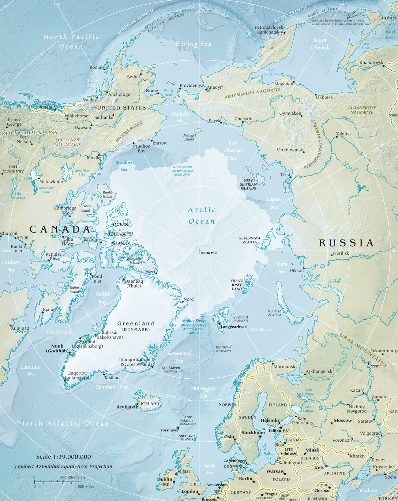

Arctic
About 4 million people live in the Arctic, spread out over eight countries, including the United States. Diverse landscapes—from the sea ice to coastal wetlands, upland tundra, mountains, wide rivers, and the sea itself—support abundant wildlife and many cultures. Of all the wildlife in the Arctic, the polar bear is the most fitting icon for this region. It's amazing adaptation to life in the harsh Arctic environment makes it an impressive species.
WWF ProjectsThe Arctic Council: Building a Region of Peaceful Cooperation
Protecting Salmon in Western Alaska and Eastern Russia
|
 |
|---|